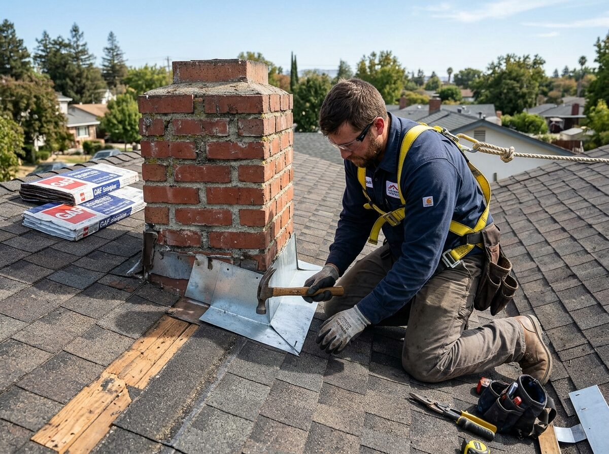
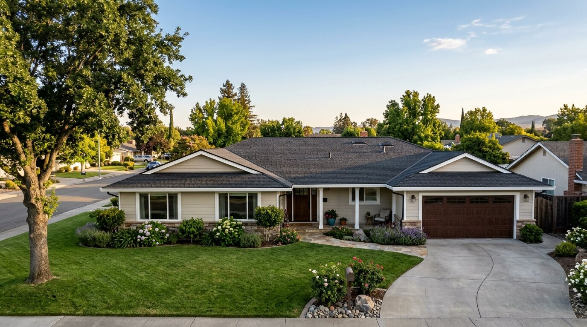
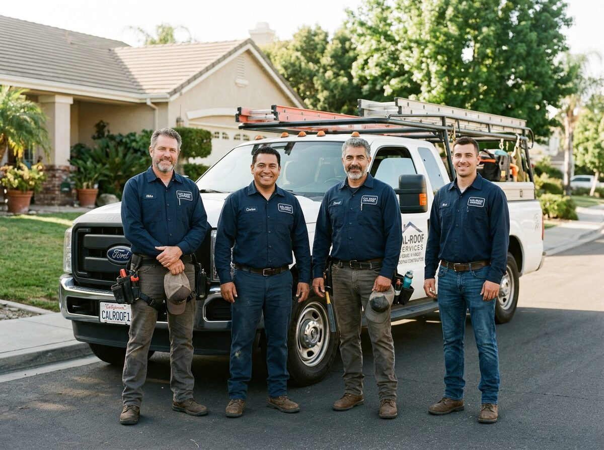
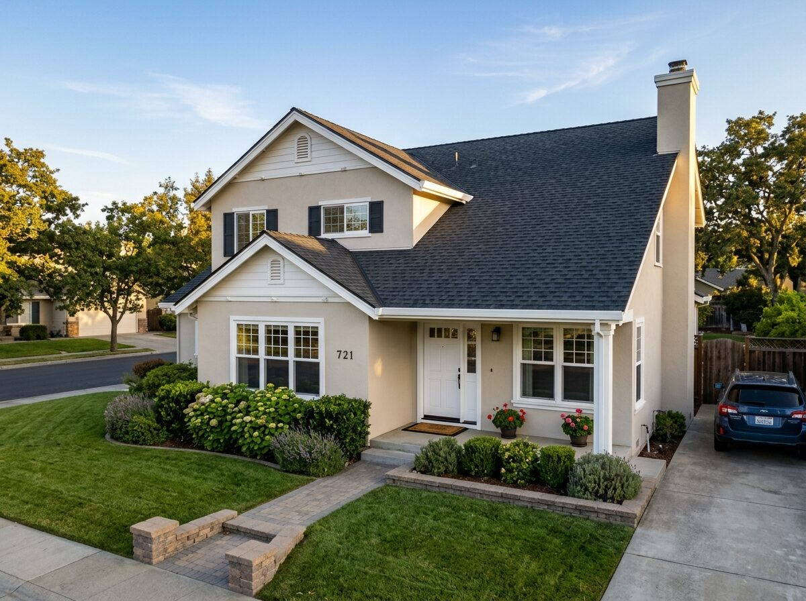
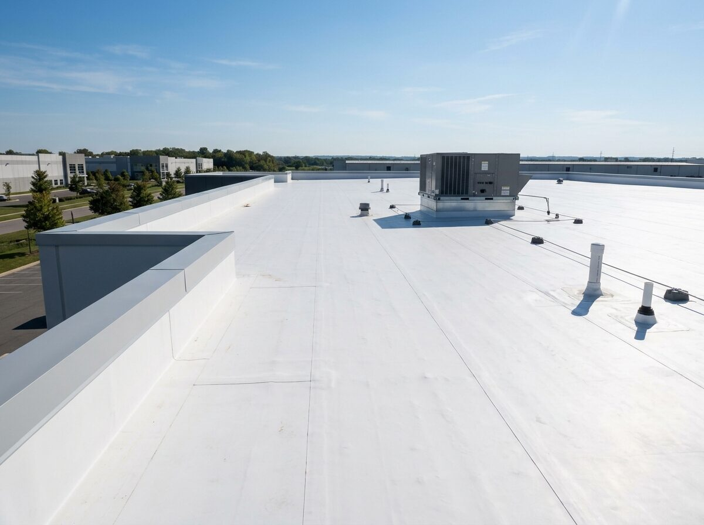
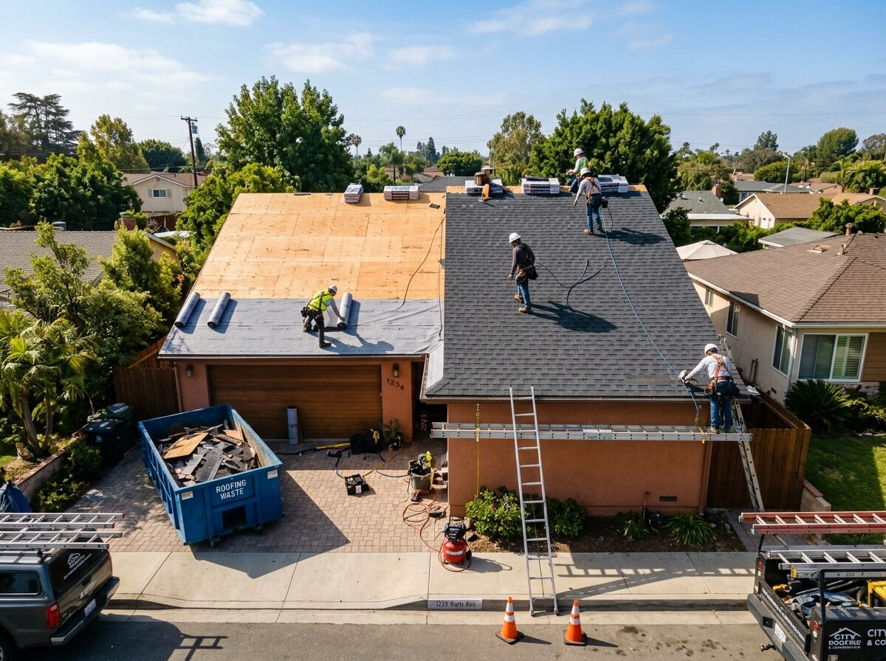
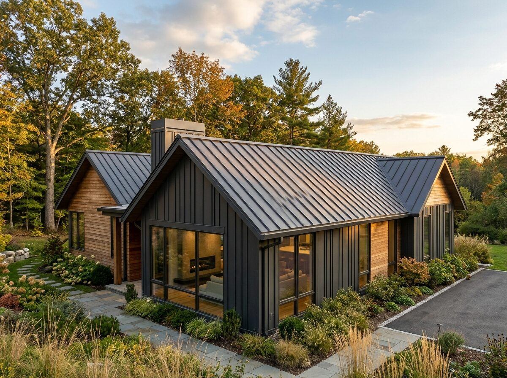
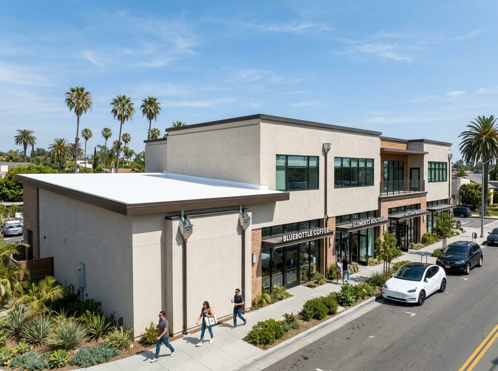

Roof Repair & Leak Detection
Ideal for wind-lifted tabs, cracked pipe boots, chimney step flashing leaks, valley debris backups, and isolated broken concrete tiles on otherwise healthy roofs.
Explore Roof Repair →
All American Roofing protects homes and businesses across Oakley with honest roof inspections, targeted leak repairs, complete tear-off replacements, and durable shingle, tile, metal, and flat roofing systems.
From stopping a single flashing leak to tearing off and replacing an aging residential or commercial roof, explore our specialized roofing services. Final material availability and project scope are confirmed during your on-site inspection.
Roofs in Oakley and the East Bay Delta corridor face harsh summer UV exposure, strong afternoon gusts, and concentrated winter storms. Shortcuts in flashing, underlayment, or fastening show up quickly when heavy rain arrives.

Whether you own an established ranch home near Vintage Parkway or a two-story tile property in Summer Lake or Emerson Ranch, your roof protects your framing, insulation, and interior finishes year-round.
We service architectural asphalt shingles, concrete and clay tiles, standing seam metal roofs, and low-slope patio or garage transitions—keeping HOA guidelines and balanced attic ventilation in mind.

Retail centers, offices, warehouses, and multi-family buildings along Main Street and East County corridors depend on watertight low-slope membranes, clean parapet coping, and clear roof drains.
All American Roofing inspects HVAC curbs, scuppers, and membrane seams carefully—scheduling repair, coating, or replacement work to minimize disruption to tenants, staff, and customers.

Knowing when a targeted repair solves the issue—and when a full tear-off replacement is the smarter long-term decision—starts with an accurate roof evaluation.

Ideal for wind-lifted tabs, cracked pipe boots, chimney step flashing leaks, valley debris backups, and isolated broken concrete tiles on otherwise healthy roofs.
Explore Roof Repair →
Recommended when shingles shed heavy granules across multiple slopes, tile underlayment reaches age limits, or widespread wear causes recurring leaks.
Explore Roof Replacement →Every material option comes with distinct thermal performance, wind resistance, architectural appearance, and maintenance requirements.

Multi-layer laminated asphalt shingles offering strong wind protection and rich curb appeal.
Shingle Roofing →
Long-lasting tile profiles, broken tile replacements, and underlayment lift-and-reset service.
Tile Roofing →
Concealed-fastener steel panels built for heat reflection, fire safety, and crisp modern lines.
Metal Roofing →Heat-welded TPO and modified bitumen systems engineered for low-slope drainage reliability.
Flat Roofing →Representative residential and commercial roof configurations illustrating clean flashing transitions, straight courses, and organized job sites.
Dimensional slate shingle installation paired with new drip edge flashing, valley metal, and ventilated ridge caps.
View Project Details →
Underlayment renewal, matched replacement tiles, kickout wall flashing, and clean ridge cap alignment.
View Project Details →
Reflective single-ply membrane assembly with crisp metal coping and unobstructed rainwater scuppers.
View Project Details →Every roofing repair and replacement follows a consistent four-step process so property owners know exactly what to expect.
We examine slopes, flashing seams, vents, valleys, gutters, and accessible attic areas to pinpoint wear accurately.
You receive clear repair or replacement options, material specifications, and an estimated schedule before committing.
Landscaping is protected, worn materials and soft decking are addressed cleanly, and new components are installed to spec.
Debris is cleared off-site, walkways and driveways are swept with magnets, and we review the finished work with you.
Oakley, CA is our primary service market. Explore neighborhood-specific roofing considerations below and call (855) 235-0472 to confirm scheduling for your street.
In addition to Oakley, these proposed service area pages outline surrounding East County communities. Please call (855) 235-0472 to confirm current crew availability for properties outside Oakley city limits.
We believe trust is earned through real completed projects—not invented testimonials. Here are the practical standards every homeowner can expect when working with All American Roofing.
Instead of vague verbal guesses, we explain what was observed on your roof, flashing, and decking so you can compare repair and replacement choices calmly.
Protecting flowerbeds, patios, and driveways during tear-off and finishing with thorough debris haul-away and magnetic fastener checks are standard on every job.
Verified customer testimonials from Oakley and East Contra Costa homeowners will be published here as completed project reviews are collected directly from clients.
Schedule Your Estimate →We handle roof repairs, roof leak detection, complete roof replacements, new roof installations, roof inspections, preventive maintenance, storm damage repairs, shingle, tile, metal, and flat roofing, as well as residential, commercial, and gutter services.
We perform an on-site inspection of your shingles or tiles, flashing seams, valleys, and accessible attic decking. If damage is localized and surrounding roofing remains sound, we recommend targeted repair rather than unnecessary replacement.
Oakley, CA is our primary service hub—including Summer Lake, Emerson Ranch, Cypress Grove, Vintage Parkway, Laurel Crest, Downtown Oakley, and Magnolia Park. Call (855) 235-0472 to confirm current scheduling for nearby cities such as Brentwood, Antioch, Discovery Bay, Knightsen, Bethel Island, and Pittsburg.
Call (855) 235-0472 directly or submit your property location and roofing concern through our Contact page to arrange an on-site evaluation.
Call All American Roofing directly at (855) 235-0472 or complete the estimate request form on our Contact page to schedule an on-site roof evaluation in Oakley or confirm nearby availability.